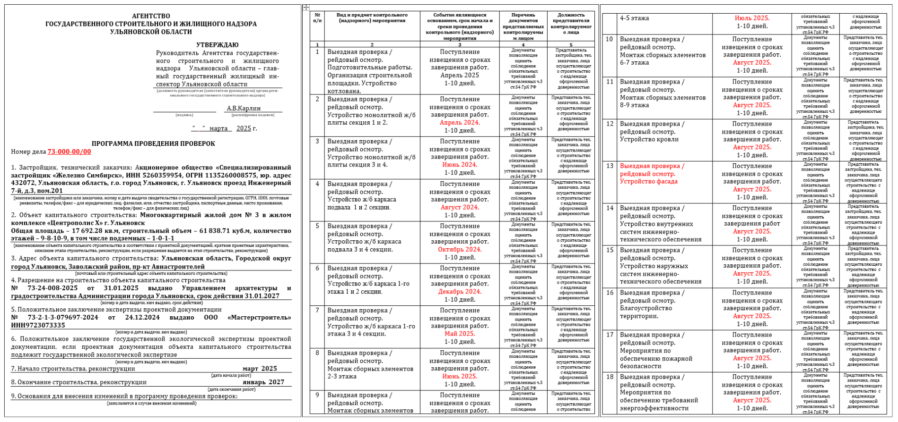
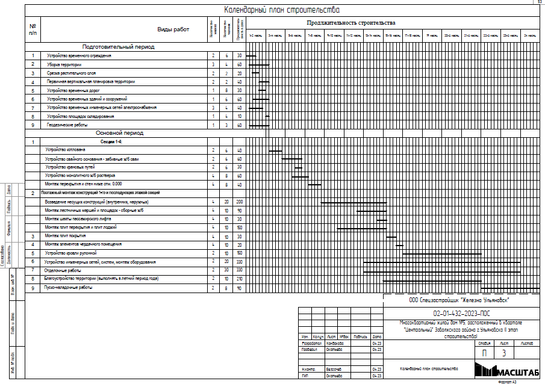

Формирование графика проверок
После подачи заявления через портал Госуслуг или извещения о начале строительства нарочно с полным комплектом документов в орган государственного строительного надзора (ГСН), извещение регистрируют в системе электронного документооборота ГСН и присваивают регистрационный номер, как входящему письму.

Если при приемке документов выявлены замечания или несоответствия, в течение трех рабочих дней допускается донести или исправить недостающие документы. В противном случае заявителю направят отказ в приеме документов.
Если замечаний нет, по усмотрению руководителя ГСН на объект назначают инспектора (в зависимости от нагрузки, специфики объекта или региональных особенностей, например, закрепления по районам города и области).
Назначенный инспектор формирует распоряжение о назначении инспектора (или группы инспекторов) на объект капитального строительства. Как ранее рассказывали, на объекте может быть один инспектор или группа: в этом случае назначается руководитель группы и узкопрофильные специалисты-инспектора.
После подготовки и подписания распоряжения руководителем ГСН ответственный инспектор (руководитель группы) на основании документов составляет программу проведения проверок (или кратко — график проверок).
График проверок — это документ, где на титульных листах описаны характеристики объекта (из РНС, проектной документации и извещения о начале строительства). На втором листе — таблица с пунктами (этапами) строительных работ, выбранными инспектором ГСН исходя из специфики объекта: для многоквартирного дома — этапы общестроительных работ (фундаменты, каркас, инженерные сети, благоустройство, кровли, фасады и т. д.); для строительства дорог — работы по устройству каждого слоя дорожного полотна; для производственного объекта — общестроительные работы и установка оборудования.

Напротив каждого этапа указывается основание проверки («поступление извещения о сроках») и дата, по наступлении которой застройщик обязан подать извещение о сроках завершения работ (или перенести сроки, если работы не выполнены в указанный срок).
Даты формируют исходя из календарного графика строительства (из раздела ПОС) или по усмотрению инспектора ГСН с согласованием застройщика. Инспектор составляет проект программы проверок с датами и отдает его на согласование застройщику нарочно или отправляет по электронной почте представителю застройщика.

Поскольку инспекторы знают застройщиков и их представителей с контактными данными, инспектор по звонку вызывает представителя для вручения программы проведения проверок.
Когда этапы и даты согласованы, инспектор ГСН дооформляет программу и отдает ее на согласование и утверждение руководителю органа ГСН.
После утверждения программа вручается нарочно (наиболее частый случай) представителю застройщика по доверенности — с отметкой в конце программы. Один экземпляр остается в деле ГСН, второй отдается застройщику.
Если извещение подавалось электронно, программа направляется через портал Госуслуг: инспектор загружает отсканированный вариант, подписывает электронной подписью. Она приходит в личный кабинет заявителя (застройщика), но сейчас этот функционал еще не до конца отработан.
Таким образом, формируется и направляется программа проведения проверок. Основная задача застройщика — следить за сроками: при готовности этапа извещать инспектора ГСН, при отставании — переносить сроки.